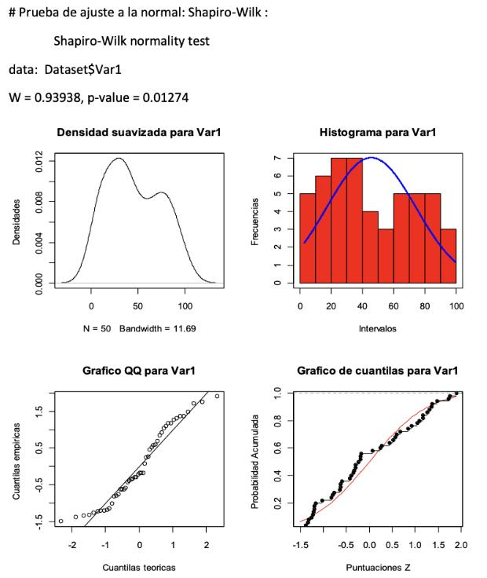

Problema 1.1-Fumar e Insomnio
P.1.1. Queremos determinar si hay relación entre el hábito de fumar (A) y el hecho de sufrir trastorno en el sueño (B) en una muestra de 150 personas. Con los siguientes datos que mostramos en la tabla de contingencia:
Establece si existe relación entre A y B. Para determinar si existe relación entre el hábito de fumar y el hecho de sufrir trastorno en el sueño utilizaremos prueba de chi-cuadrado para la independencia.
Link a hoja de cálculoA=Fumar B=Insomnio
H0: A y B son independientes
H1: A y B no son independientes

Cálculo X2 = 8,744
Grados de libertad 2 = (3 filas - 1) * (2 columnas -1)
X2 Tablas = 5,991
Al ser X2 (8.744) mayor que el valor crítico calculado con las tablas (5.991), rechazamos la hipótesis nula H0. Lo que valida la hipótesis alternativa H1 por lo cual existe relación entre (A) el hábito de fumar y (B) el trastorno en el sueño.
Problema 1.2-Depresión y Ansiedad
1.2 Un psicólogo desea conocer la relación entre el síntoma depresivos (A) y el síntoma ansiedad (B). Para ello dispone de una muestra de 100 historiales clínicos que mostramos en la siguiente tabla:
Nos preguntamos: ¿Estos dos síntomas son independientes? Consideramos el nivel de significación 0,02.
Link a hoja de cálculoA=Síntoma ansiedad B=Síntoma depresivo
H0: A y B son independientes
H1: A y B no son independientes

Cálculo X2 = 5,823
Grados de libertad 1 = (2 filas - 1) * (2 columnas -1)
X2 Tablas = 5,412 (nivel de significancia 0,02)
Al ser X2 (5.823) mayor que el valor crítico calculado con las tablas (5.412), rechazamos la hipótesis nula H0. Lo que valida la hipótesis alternativa H1 por lo cual existe relación entre (A) la depresión y (B) la ansiedad, no son independientes.
Problema 2.1-Var1
Elaboración de un informe en el que se interprete la prueba de bondad de ajuste a la normalidad, de los siguientes gráficos:
Gráfico variable no1
Variable 1: Resultado Shapiro-Wilk (W = 0.93938, p-value = 0.01274)
La variable 1 no sigue una distribución normal. Llegamos a la conclusión al ser p-value (0.01274) < 0.05, por lo que rechazamos H0. Aún con la conclusión anterior, se interpreta con el resultado del estadístico de contraste W (0.93938) tan cerca de 1, que existe un ajuste alto y no están extremadamente alejados a la normalidad. El gráfico de densidad no es en campana ni simétrico por un conjunto de datos en su distribución central, el histograma muestra en barras de manera muy similar esto comentado, y en el gráfico Q-Q tiene puntos desviados de la línea al igual que en el de cuantilas.
Problema 2.2-Var2
Elaboración de un informe en el que se interprete la prueba de bondad de ajuste a la normalidad, de los siguientes gráficos:
Gráfico variable no2
Variable 2: Resultado Shapiro-Wilk (W = 0.95394, p-value = 0.04965)
La variable 2 no sigue una distribución normal. Llegamos a esta conclusión al ser p-value (0.04965) < 0.05, por lo que rechazamos H0. Conclusión muy ajustada, que analizando el estadístico de contraste W (0.95394) tan cerca de 1 indica un ajuste alto. La distribución no es normal pero estando muy cerca de esta y con ajuste alto. En los gráficos también se observa que está muy cerca de serlo, los gráficos de densidad suavizada e histograma dibujan casi una campana y una distribución de datos cercana a esta, y en los gráficos QQ y cuantilas los puntos están cerca de la línea.
Problema 3.1-Relación género y edad
1) ¿Existe relación entre la variable género y edad en nuestra muestra? (1p)
Planteamiento de la hipótesis nula:
Hipótesis de normalidad (Shapiro-Wilk):
◦ H0: La variable edad sigue una distribución normal.
◦ H1: La variable edad no sigue una distribución normal.
Hipótesis de igualdad de medias (t-test de Welch):
◦ H0: No hay diferencia significativa en la media de edad entre los géneros.
◦ H1: Hay una diferencia significativa en la media de edad entre los géneros.
Cálculo del estadístico de contraste:
Prueba de normalidad (Shapiro-Wilk):
◦ Total: W = 0.96675, p = 0.1703
◦ Femenino: W = 0.98155, p = 0.9141
◦ Masculino: W = 0.945, p = 0.193
◦ Conclusión: No se rechaza H0, los datos son normales.
Prueba de contraste: t de Welch (para comparar las medias de edad entre géneros):
◦ t = 0.197, df = 46.823, p = 0.8446
◦ Intervalo de confianza: [-5.287778, 6.436658]
◦ Media Grupo F (41.50636), Media Grupo M (40.93192)
◦ Conclusión: No se rechaza H0, no hay diferencias significativas entre medias.
Decisión estadística:
Con base en las pruebas de normalidad, podemos usar el t-test de Welch. Dado que el p-valor del t-test es 0.8446 (mayor a 0.05), no se rechaza la hipótesis nula de igualdad de medias.
Conclusión:
No se encuentran diferencias significativas en la media de edad entre géneros en esta muestra. Las pruebas
de normalidad y la t de Welch indican que las edades en ambos grupos son similares.
No existe relación entre las dos variables género y edad.
Problema 3.2-Relación género y sueldo
2) ¿Existe relación entre la variable género y el sueldo que cobran las personas de nuestra muestra? (1p)
Planteamiento de la hipótesis nula:
Hipótesis de normalidad (Shapiro-Wilk):
◦ H0: La variable sueldo sigue una distribución normal para ambos géneros.
◦ H1: La variable sueldo no sigue una distribución normal para alguno de los géneros.
Hipótesis de igualdad de medias (t-test de Welch):
◦ H0: No hay diferencia significativa en el sueldo entre los géneros.
◦ H1: Hay una diferencia significativa en el sueldo entre los géneros.
Cálculo del estadístico de contraste:
Prueba de normalidad (Shapiro-Wilk):
◦ Para la variable sueldo total: W = 0.95719, p = 0.06781
◦ Para género femenino: W = 0.96574, p = 0.54
◦ Para género masculino: W = 0.94319, p = 0.1754
Decisión para la normalidad:
Dado que los p-valores son mayores que 0.05, no se rechaza la hipótesis nula de normalidad, por lo que los datos de sueldo siguen una distribución normal para ambos géneros.
Prueba de contraste: t de Welch (para comparar las medias de sueldo entre géneros):
◦ t = 0.50369, grados de libertad df = 46.994, p = 0.6168
◦ Intervalo de confianza: [-245.4330, 409.3803]
◦ Medias estimadas: Grupo F (2133.665), Grupo M (2051.691)
Decisión para t de Welch: Dado que el p-valor es mayor que 0.05, no se rechaza la hipótesis nula. No hay diferencia significativa en las medias de sueldo entre los géneros.
Decisión estadística:
Dado que los datos cumplen con la normalidad, utilizamos el t-test de Welch. El p-valor de la prueba es 0.6168 (mayor que 0.05), por lo que no se rechaza la hipótesis nula de igualdad de medias entre los géneros.
Conclusión:
No hay evidencia suficiente para afirmar que existe una diferencia significativa en el sueldo entre los géneros en esta muestra. Las pruebas de normalidad y la prueba t de Welch confirman que las medias de sueldo entre los géneros no son significativamente diferentes.No existe relación entre las dos variables sueldo y género.
Problema 3.3-Relación sueldo y posición
3) ¿Existe relación entre el sueldo y la posición que ocupan en la empresa? (1p)
Planteamiento de la hipótesis nula:
Hipótesis de normalidad (Shapiro-Wilk):
◦ H0: El sueldo sigue una distribución normal para cada posición.
◦ H1: El sueldo no sigue una distribución normal para alguna de las posiciones.
Hipótesis de igualdad de medias (ANOVA):
◦ H0: No hay diferencias significativas en el sueldo entre las diferentes posiciones.
◦ H1: Hay diferencias significativas en el sueldo entre las diferentes posiciones.
Cálculo del estadístico de contraste:
Pruebas de normalidad (Shapiro-Wilk):
◦ Para la variable sueldo total: W = 0.95719, p = 0.06781
◦ Para posición alta: W = 0.92102, p = 0.07007
◦ Para posición baja: W = 0.92651, p = 0.2725
◦ Para posición media: W = 0.88285, p = 0.07794
Decisión para la normalidad: Todos los p-valores son mayores que 0.05, por lo que no se rechaza la hipótesis nula de normalidad. Los datos de sueldo siguen una distribución normal para cada posición, por lo que podemos usar ANOVA.
Prueba de contraste: ANOVA (para comparar las medias de sueldo entre posiciones):
◦ F = 60.99, p-valor = 8.7e-14
◦ Grados de libertad: df1 = 2 (posiciones), df2 = 47 (residual)
◦ Medias estimadas: Posición alta (2525.104), Posición baja (1374.008), Posición media (2101.569)
Decisión para ANOVA: Dado que el p-valor es extremadamente bajo (menor que 0.05), se rechaza la hipótesis nula. Hay diferencias significativas entre los sueldos según la posición en la empresa.
Decisión estadística:
Dado que las pruebas de normalidad permiten el uso de ANOVA y el p-valor de ANOVA es extremadamente bajo, se rechaza la hipótesis nula de igualdad de sueldos entre las posiciones.
Conclusión:
Hay evidencia suficiente para afirmar que existen diferencias significativas en los sueldos según la posición ocupada en la empresa.La posición más alta tiene el sueldo más elevado, seguida de la posición media y, finalmente, la posición baja. Las comparaciones post-hoc muestran que todas las diferencias entre las posiciones son estadísticamente significativas.
Problema 3.4-Relación edad y posición
4) ¿Existe relación entre la edad de las personas de la muestra y su posición o cargo de la empresa? (1p)
Planteamiento de la hipótesis nula:
Hipótesis de normalidad (Shapiro-Wilk):
◦ H0: La variable edad sigue una distribución normal para cada posición.
◦ H1: La variable edad no sigue una distribución normal para alguna de las posiciones.
Hipótesis de igualdad de medias (ANOVA):
◦ H0: No hay diferencias significativas en la edad entre las diferentes posiciones.
◦ H1: Hay diferencias significativas en la edad entre las diferentes posiciones.
Cálculo del estadístico de contraste:
Pruebas de normalidad (Shapiro-Wilk):
◦ Para la variable edad total: W = 0.96675, p = 0.1703
◦ Para posición alta: W = 0.95819, p = 0.4278
◦ Para posición baja: W = 0.98533, p = 0.9949
◦ Para posición media: W = 0.93332, p = 0.3764
Decisión para la normalidad: Todos los p-valores son mayores que 0.05, por lo que no se rechaza la hipótesis nula de normalidad. Los datos de edad siguen una distribución normal para cada posición, por lo que podemos usar ANOVA.
Prueba de contraste: ANOVA (para comparar las medias de edad entre posiciones):
◦ F = 1.182, p-valor = 0.316
◦ Grados de libertad: df1 = 2 (posiciones), df2 = 47 (residual)
◦ Medias estimadas: Posición alta (39.45120), Posición baja (40.77145), Posición media (44.82915)
Decisión para ANOVA: Dado que el p-valor es mayor que 0.05, no se rechaza la hipótesis nula. No hay diferencias significativas en las medias de edad según la posición.
Decisión estadística:
Dado que las pruebas de normalidad permiten el uso de ANOVA y el p-valor de ANOVA es mayor que 0.05, no se rechaza la hipótesis nula de igualdad de edades entre las posiciones.
Conclusión:
No hay evidencia suficiente para afirmar que existen diferencias significativas en la edad según la posición ocupada en la empresa.Las pruebas de normalidad y la prueba ANOVA confirman que las medias de edad entre las posiciones no son significativamente diferentes.
Problema 3.5-Relación género y posición
5) ¿Existe relación entre el género de las personas de la muestra y su posición en la empresa? (1p)
Planteamiento de la hipótesis nula:
Hipótesis de independencia (prueba Chi-cuadrado):
◦ H0: El género es independiente de la posición en la empresa.
◦ H1: El género está relacionado con la posición en la empresa.
Cálculo del estadístico de contraste:
Prueba de Chi-cuadrado de Pearson:
◦ Estadístico Chi-cuadrado X² = 2.3067
◦ Grados de libertad (df) = 2
◦ p-valor = 0.3156
Frecuencias observadas:
◦ Género Femenino (F): Alta = 14, Baja = 5, Media = 6
◦ Género Masculino (M): Alta = 9, Baja = 9, Media = 7
Frecuencias esperadas:
◦ Género Femenino (F): Alta = 11.5, Baja = 7, Media = 6.5
◦ Género Masculino (M): Alta = 11.5, Baja = 7, Media = 6.5
Componentes Chi-cuadrado:
◦ Para F: 0.54 (Alta), 0.57 (Baja), 0.04 (Media)
◦ Para M: 0.54 (Alta), 0.57 (Baja), 0.04 (Media)
Decisión estadística:
Dado que el p-valor de 0.3156 es mayor que el nivel de significación típico de 0.05, no se rechaza la hipótesis nula. Esto indica que no hay evidencia suficiente para afirmar que existe una relación significativa entre el género y la posición en la empresa.
Conclusión:
No se encontró evidencia suficiente para concluir que el género de las personas está relacionado con la posición que ocupan en la empresa.Según la prueba de Chi-cuadrado, las diferencias observadas entre géneros y posiciones pueden atribuirse al azar, y no hay una dependencia significativa entre estas dos variables.